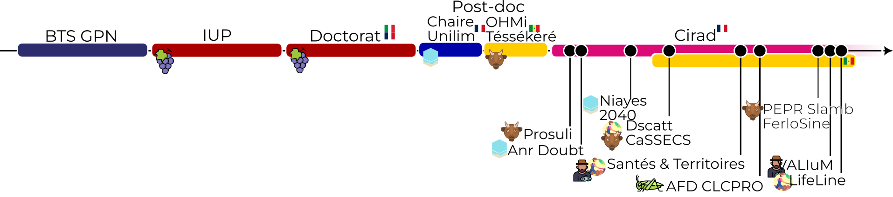
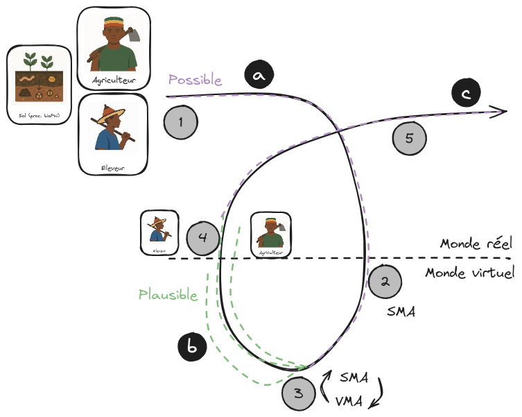

L’art d’être en Commun
accompagner pour mieux explorer
Par Etienne Delay
Le 4 avril 2026 - MSH Montpellier
 |
La carte de la traversée
 |
 |
 |
Le "contrat de lecture"
- Ce que je montres : Du terrain à la démocratie : une trajectoire de pratiques où la modélisation d’accompagnement déplace la science vers le monde.
- Ce que je ne fais pas : Pas de “Science” en surplomb : seulement des pratiques situées, sans prophétie ni neutralité confortable — accompagner, composer, assumer les obligations.
- Où je veux en venir : modèle-objet au modèle-relation : déplacer l’attention vers nos obligations, rendre prise aux collectifs, et tendre un fil d’émancipation pour des mondes habitables.
La horde du contrevent
La trajecoire
La trace

Des fissures dans les certitudes
- L'utilité des modèles dépend de l'arène,
- Les certitudes techniques ont des effets sur le tissu social,
- L'environnement n'est pas un décore, c'est un champs de bataille sociale,
- L'approche par les communs est pour les communautées, se permettre d'exister.
Les outils

Les terrains : un double déplacement
- La mutation du statut du terrain : de l'observation à la création
- Le déplacement de⋅s l’énonciateur⋅s : du local au global
- Le déplacement des postures sociales (Dépossession)
Checkpoint #1
- Une trajectoire allant de la technique vers le "lien",
- La maturité des Communs (Ressource → Service → Territoire)
- L'exploration de modèle (ComExp) pour ouvrir les possibles
- Le terrain comme levier de création conceptuelle
Les dépossédés
Réflexion théorique
La posture
égalité comme point de départ / place du diplomate (1 schéma rôle).
La question qui pique
statut de vérité des modèles (reprends la scène d’intro en 1 phrase sur la place de la vérité dans le modele).
Décalage prométhéen
1 dessin simple : produire ↔ ressentir/juger.
Checkpoint #2
Le ministère du future
Viabilité + SMA
pourquoi maintenant” (1 schéma entrée/sortie)
Récit d’anticipation
comment tu valorises autrement (1 exemple ultra court).
Manifeste
3 principes (doute / écoute / agir) en punchlines.